Research-Engineer CurriculumNo. 30 of 39 · Sept 2026 edition
Track 1 Crash Pack: LLM Research Engineer
This is Track 1 compressed into one high-density volume. The base volumes teach the science. This pack turns them into judgment. You get the decisions a generalist LLM research engineer makes weekly, the numbers worth memorizing, the traps that burn budgets, and 30 rapid-fire questions with worked answers. Read it after the track, or use it as the fast path and let it point you back to the chapters that matter.
Work it in three passes. Pass 1 (30 minutes): the 12 decision rules and the cheat sheet. Pass 2 (60 minutes): the numbers table, the traps, the capstone. Pass 3 (60 minutes): the 30 questions, answered from memory before you reveal each answer.
Key takeaways
- Every decision in this role is one of four kinds: compute and comparison, run health, evidence judgment, scale judgment. The 12 rules below cover all four.
- Two formulas run the job: training FLOPs = 6ND (6 × params × tokens), and the Chinchilla tradeoff (~20 tokens per param at fixed compute).
- A result is real only when it is compute-matched, honestly evaluated, and outside noise. Everything else is a story.
Part 1. The 12 decision rules
Read each rule as a contract. The IF names the situation. The THEN names the action. The reason line says why the rule exists. When two rules conflict, the one about honesty (Rules 3, 7, 8, 9) always wins.
A. Compute and comparison
Rule 1. Ablate or scale, not both.
IF the question is "does this change help," THEN run a compute-matched ablation, not a bigger run. IF the question is "what will the big run cost and how good will it be," THEN fit a scaling law on small runs first. Reason: ablations answer "better," scaling laws answer "how much." Spending big-run compute on a "better" question is the most expensive way to learn nothing.
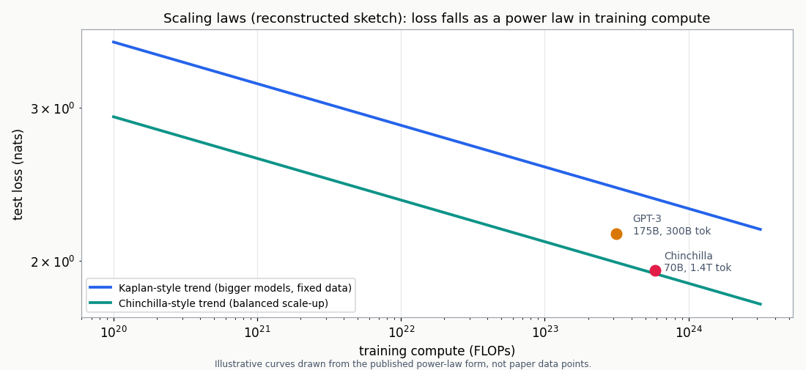
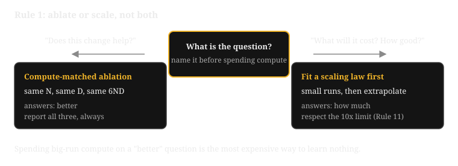
Rule 2. Chinchilla-optimal or inference-optimal.
IF the compute budget is the binding constraint, THEN train near 20 tokens per param (the Chinchilla optimum). IF inference volume dominates lifetime cost, as with a deployed product, THEN train a smaller model far past the Chinchilla ratio. Overtraining trades training compute for inference efficiency: the extra training is paid once, the serving savings are paid forever. Reason: the "optimal" ratio depends on what you are optimizing, training FLOPs or serving FLOPs. Pick the wrong objective and you optimize the wrong bill.
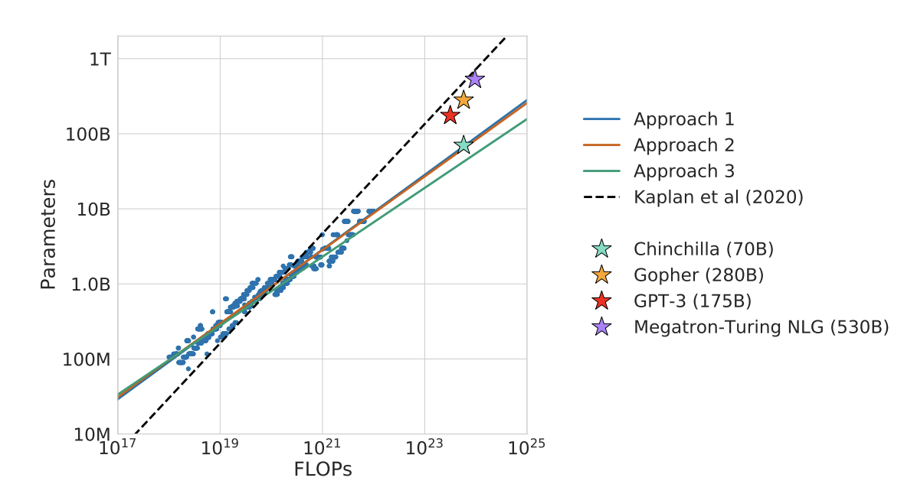
Rule 3. When a benchmark delta counts.
IF the paired 95 percent bootstrap interval (resampling the per-item score differences with replacement, 2,000+ times, to build the interval) excludes zero AND the evals are clean, THEN treat the delta as real. Clean means: no contamination, identical decode settings, same prompt format, seeds reported. IF any of those fail, THEN rerun the eval before changing the recipe. Reason: a delta that cannot survive a clean rerun is noise wearing a lab coat.
B. Run health
Rule 4. Kill early.
IF loss diverges, hits NaN, or spikes past 3x the rolling median inside the first 5 percent of steps, THEN kill the run. Debug from the last good checkpoint. Reason: a run that will fail almost always shows it early. A dead run still burns the allocation.
Rule 5. The MFU floor.
MFU is Model FLOPs Utilization: the share of the GPU's peak throughput the run actually sustains. IF measured MFU is below 30 percent, THEN stop the science and fix the systems first: batch size, parallelism layout, kernel choice. IF MFU sits at 40 to 60 percent, THEN the run is healthy on the systems side and further gains come from the recipe. Reason: low MFU is burned money, and no ablation result is trustworthy on a broken baseline.
Rule 6. Loss went up: data or optimizer?
IF loss spikes and the gradient norm stays flat, THEN suspect a data artifact (a bad batch, a corrupted sequence) and inspect that batch. IF loss climbs and the gradient norm climbs with it, THEN suspect optimization instability: tighten clipping, lower the learning rate, resume from the last good checkpoint. Reason: the gradient norm is the second signal. It separates data problems from optimizer problems, and the fix is different for each.
C. Evidence and papers
Rule 7. Reproduce before adopting.
IF a paper has no code, no ablations, and single-seed results, THEN reproduce its core claim at proxy scale before letting it change your recipe. Reason: most exciting claims do not survive contact with your data and your scale. The reproduction is cheap. The wrong recipe change is not.
Rule 8. The contamination check.
IF an eval score jumps suspiciously after a data change, THEN check n-gram overlap between eval items and training data before celebrating. Reason: a model that has seen the test is not a better model. It is a leaked one.
Rule 9. Write up the negative result.
IF a clean, compute-matched ablation kills a plausible idea, THEN write it up and file it where the team will find it. Reason: the lab's shared memory of what does not work is what stops the next person from burning the same budget on the same idea.
D. Scale judgment
Rule 10. isoFLOP sweep or one big run.
IF you must choose between model sizes at a fixed budget, THEN run an isoFLOP sweep: a comparison of model sizes at equal training FLOPs, so every point on one curve costs the same compute. Use budgets spaced about 4x apart, and four to six sizes spanning roughly 8x in params.
IF the size is already decided, THEN spend the budget on one clean run with good evals. Reason: the sweep finds the minimum of the U-curve. At fixed compute, loss plotted against batch size or model size falls then rises: too small wastes the budget on noise, too large wastes it on a model the budget cannot feed. A single run at the wrong size is the most expensive way to learn the same lesson.
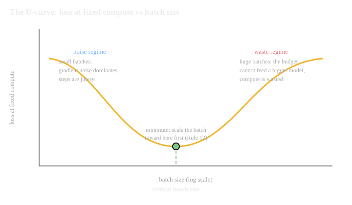
Rule 11. The extrapolation limit.
IF the target compute is more than 10x past your largest fitted run, THEN report a wide band and a plan to gather an intermediate point. Do not report a point prediction. Reason: power-law fits are honest interpolators and fiction past one order of magnitude.
Rule 12. Batch or learning rate?
IF the curves are jittery at small batch (gradient noise dominates), THEN scale the batch up toward the critical batch size (the batch size at the bottom of the U-curve, where the noise-dominated regime meets the compute-dominated regime) before touching the learning rate. IF the curves are smooth but progress is slow, THEN the recipe is the lever (LR schedule, data mix), not the batch. Reason: batch size controls noise, learning rate controls step size. Tuning the wrong knob wastes the sweep.
How to read this diagram
- Top: the launch. Every run enters the same triage. The first 5 percent of steps is the observation window.
- Left branch: hard failure. NaN or divergence means kill immediately. The suspects are precision, learning rate, and data, in that order.
- Middle branch: spikes. A spike over 3x the rolling median triggers the gradient-norm question from Rule 6. Flat norm points at the batch. Climbing norm points at the optimizer.
- Right branch: smooth curves. Smooth loss is not enough. Measure MFU. Below 30 percent is a systems problem wearing a training mask. Forty to 60 percent is healthy.
- Bottom: the loop. Every kill ends in a fix and a relaunch, never in staring at a dying curve.
Next: Part 2 turns the rules into arithmetic, with the formulas and constants behind "compute-matched" and "outside noise."
Part 2. Must-memorize numbers and formulas
The rules tell you what to do. They leave one question open: what are the actual quantities behind "match the compute" and "prove it is not noise"? Part 2 is the track's working memory, the formulas and constants every rule leans on.
The table below is the track's working memory. Each row gives the value with its units, and what decision it drives. Values marked UNVERIFIED come from standard practice outside the curriculum volumes; the rest are grounded in the volumes named in the last column.
| # | Item | Value | Decides |
|---|---|---|---|
| 1 | Training FLOPs | C = 6ND (FLOPs) | the budget every fair run is matched on |
| 2 | Forward backward split | 2 fwd + 4 bwd (FLOPs per param per token) | why the backward pass rules cost |
| 3 | Chinchilla ratio | ~20 (tokens per param) | the default fair fight at fixed compute |
| 4 | GPT-3 training compute | 3.15e23 (FLOPs) | anchor example, computed below |
| 5 | Chinchilla training compute | 5.88e23 (FLOPs) | anchor: 70B on 1.4T tokens |
| 6 | Gopher training compute | 5.04e23 (FLOPs) | the budget Chinchilla nearly matched |
| 7 | Kaplan compute exponent | loss ~ C^-0.050 | order of gains from 10x compute |
| 8 | Power-law form | L(C) = a*C^-b + c (loss) | the fit used to predict |
| 9 | MFU, healthy large run | 40-60 (percent of peak) | the systems side is sound |
| 10 | MFU floor | 30 (percent of peak) | below this, fix systems before science |
| 11 | H100 BF16 dense peak (BF16: bfloat16, a 16-bit float with full fp32 range) | 989 (TFLOPS) | the input to GPU-hour math |
| 12 | AdamW optimizer states (AdamW: Adam with decoupled weight decay, the standard LLM optimizer) | 8 (bytes per param, 2 fp32 numbers) | why a 7B model needs sharding |
| 13 | Weights in bf16 | 2 (bytes per param) | memory math for model placement |
| 14 | Batch at scale | millions; LLaMA 4M (tokens per batch) | gradient noise vs wall clock |
| 15 | LR warmup | hundreds to low thousands (steps) | avoids early instability |
| 16 | Cosine decay floor | ~10 (percent of peak LR) | the schedule's resting point |
| 17 | Gradient clip | 1.0 (global norm) | caps single-step damage |
| 18 | Dead-run horizon | 5 (percent of steps) | failure shows early; kill fast |
| 19 | Spike threshold | 3x (rolling median) | the detector default |
| 20 | Bootstrap resamples | 2,000+ (resamples) | the "is it real" test |
| 21 | Significance level | 95 (percent CI) | zero inside the interval means noise |
| 22 | isoFLOP grid | budgets ~4x apart; 4-6 sizes over ~8x params | 12-18 runs to find the optimum |
| 23 | Extrapolation limit | 10x (past fitted compute) | point predictions past this are fiction |
| 24 | N for 6ND | non-embedding params | embedding tables scale differently |
| 25 | MoE FLOP accounting (MoE: Mixture of Experts; only a few expert sub-networks run per token) | active params, not total | the 6 in 6ND counts working params |
| 26 | Full attention | O(n^2*d) compute, O(n^2) memory | why long context needs sparse attention |
| 27 | KV cache | 2Ln*d (elements per token; L = layers, n = sequence length, d = model width) | the memory term that kills long context |
| 28 | MQA/GQA savings (fewer key/value heads shared across the query heads) | n_heads / n_kv_heads (factor) | KV cache cut vs quality tradeoff |
| 29 | PPO (Proximal Policy Optimization) clip | eps = 0.2 (ratio bound) | keeps policy updates pessimistic |
| 30 | SFT (supervised fine-tuning) recipe | LR ~10x below pre-training; 1-3 (epochs) | stops forgetting of old skills |
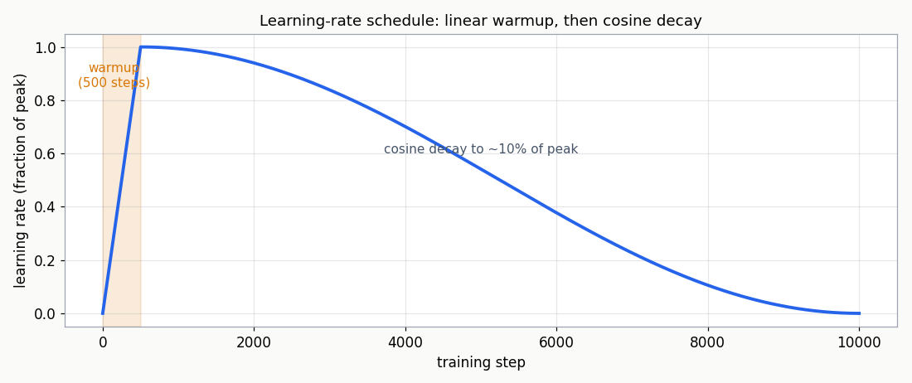

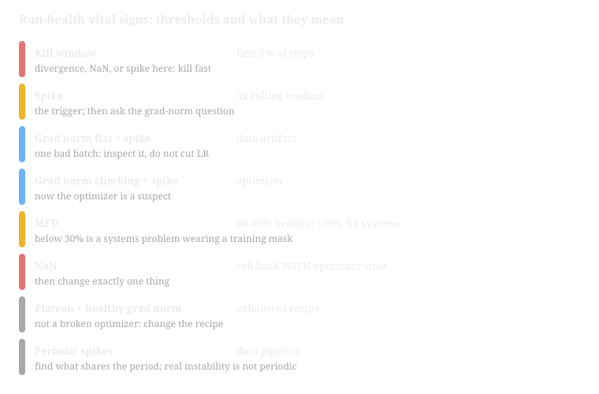
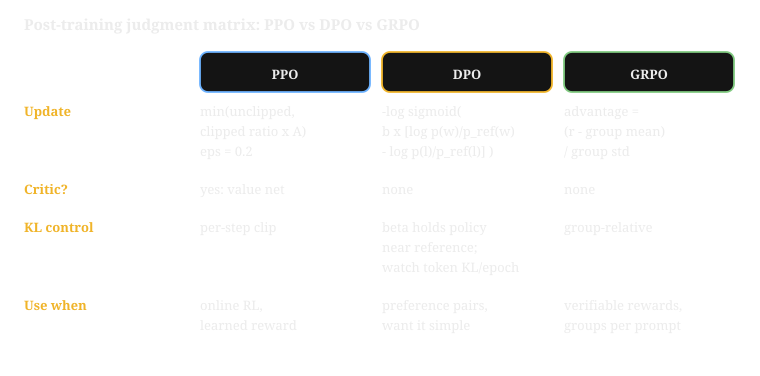
Where: C is training FLOPs, N is the non-embedding parameter count, D is the number of training tokens. The 6 splits into 2 for the forward pass and 4 for the backward pass, per token per parameter.
Worked: GPT-3: 6 × 175e9 × 300e9 = 3.15e23 FLOPs. Chinchilla: 6 × 70e9 × 1.4e12 = 5.88e23 FLOPs. Same formula, computed not quoted: the code below reproduces both rows from scratch.
Where: L is test loss, C is training FLOPs, a, b, c are fitted constants. b sets how fast loss falls with compute; c is the irreducible floor.
Worked: Kaplan's fit gives b ≈ 0.050, so 10× compute multiplies loss by 10−0.050 ≈ 0.89: an 11 percent loss reduction for ten times the FLOPs. That is the price of one step down the curve (table row 7).
A note on the table: none of the values are invented. Still, re-check exact recipe defaults (row 29) against the cited volume before quoting them in a design doc.
The code below computes rows 1, 4, 5, and 6 from scratch. It finds compute-matched (N, D) pairs along the Chinchilla line. It runs the paired bootstrap from Rules 3 and 11. Run it. The outputs are real, from the run captured while writing this pack.
import numpy as np
# --- Part 1: compute matching -----------------------------------------------
# 6*N*D: ~2 FLOPs per param per token forward, ~4 backward (dense transformer).
# N should be non-embedding params for scaling-law comparisons.
def flops(n_params, n_tokens):
# WHAT: total training FLOPs from model size and token count.
# WHY: this is the budget every fair comparison is matched on.
# WHAT BREAKS: MoE models must use ACTIVE params, not total.
return 6.0 * n_params * n_tokens
def chinchilla_pairs(flops_budget, sizes):
# WHAT: for each size, the token count that spends exactly flops_budget,
# plus the resulting tokens-per-param ratio.
# WHY: the Chinchilla-optimal comparison changes size and tokens together.
out = []
for n in sizes:
d = flops_budget / (6.0 * n)
out.append((n, d, d / n))
return out
# Worked: GPT-3 (175B, 300B tokens) vs Chinchilla (70B, 1.4T tokens).
gpt3 = flops(175e9, 300e9)
chin = flops(70e9, 1.4e12)
print("GPT-3 FLOPs: %.3e" % gpt3)
print("Chinchilla FLOPs: %.3e" % chin)
print("ratio: %.2f" % (chin / gpt3))
print()
print("Compute-matched pairs at the Chinchilla budget:")
for n, d, r in chinchilla_pairs(chin, [3e9, 7e9, 13e9]):
print(" N=%4.0fB D=%6.0fB tokens ratio=%5.1f tok/param" % (n/1e9, d/1e9, r))
# --- Part 2: is the delta real? ----------------------------------------------
def bootstrap_paired_ci(scores_a, scores_b, n_boot=2000, ci=0.95, seed=7):
# WHAT: 95% CI on the mean paired difference via resampling.
# WHY: pairing subtracts item difficulty (most of the variance); the CI
# says whether the delta survives noise. If 0 is inside, do not claim.
# WHAT BREAKS: assumes per-example scores are independent. Evals with
# shared passages need a cluster bootstrap (resample passages).
rng = np.random.default_rng(seed)
diffs = np.asarray(scores_b, dtype=float) - np.asarray(scores_a, dtype=float)
means = [rng.choice(diffs, size=len(diffs), replace=True).mean() for _ in range(n_boot)]
lo, hi = np.percentile(means, [(1-ci)/2*100, (1+ci)/2*100])
return diffs.mean(), lo, hi
print()
rng = np.random.default_rng(0)
base = rng.normal(62.0, 9.0, size=200)
treat = base + rng.normal(2.0, 2.5, size=200) # truly +2 points
d, lo, hi = bootstrap_paired_ci(base, treat)
print("true +2.0 delta: mean=%+.2f 95%% CI [%+.2f, %+.2f] -> %s" %
(d, lo, hi, "REAL (0 outside)" if lo > 0 or hi < 0 else "noise"))
treat2 = base + rng.normal(0.15, 2.5, size=200) # truly +0.15 points
d2, lo2, hi2 = bootstrap_paired_ci(base, treat2)
print("true +0.15 delta: mean=%+.2f 95%% CI [%+.2f, %+.2f] -> %s" %
(d2, lo2, hi2, "REAL (0 outside)" if lo2 > 0 or hi2 < 0 else "noise"))
GPT-3 FLOPs: 3.150e+23
Chinchilla FLOPs: 5.880e+23
ratio: 1.87
Compute-matched pairs at the Chinchilla budget:
N= 3B D= 32667B tokens ratio=10888.9 tok/param
N= 7B D= 14000B tokens ratio=2000.0 tok/param
N= 13B D= 7538B tokens ratio=579.9 tok/param
true +2.0 delta: mean=+1.78 95% CI [+1.44, +2.13] -> REAL (0 outside)
true +0.15 delta: mean=+0.16 95% CI [-0.18, +0.49] -> noise
How to read this diagram
- The FLOPs block.
flops(175e9, 300e9)returns 3.150e23. That is row 4 of the table, computed not quoted. The ratio 1.87 says Chinchilla spent under twice GPT-3's compute, not ten times. - The pairs block. At the Chinchilla budget, a 7B model would need 14,000B tokens (2,000 tok/param) to spend the same FLOPs. The absurd ratios show why the optimum sits near 20: extreme sizes waste the budget on the wrong side of the tradeoff.
- The bootstrap block. The +2.0 delta gives a CI of [+1.44, +2.13]: zero is outside, so the delta is real. The +0.15 delta gives [-0.18, +0.49]: zero is inside, so it is noise even though the measured mean is positive. That is the whole lesson of Rule 3 in one printout.
Next: Part 3 names the eight traps that burn budgets even when the math is right.
Part 3. Classic traps
The numbers tell you what is right. They do not tell you what usually goes wrong. Part 3 covers the eight traps that have burned real budgets, each one mapped to the rule that prevents it.
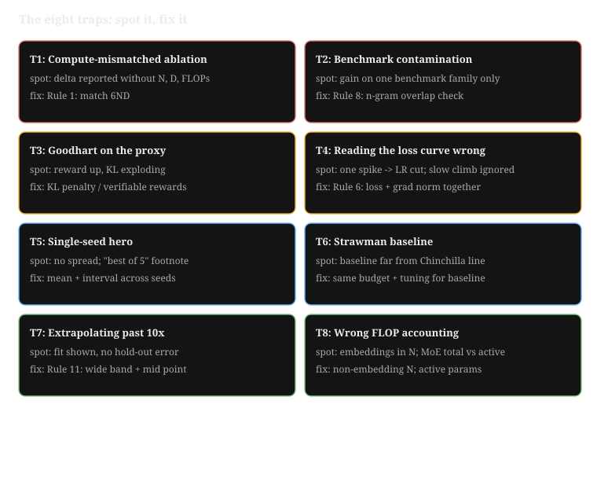
Each trap below has burned real budgets. For each one: what it looks like, how to spot it, and the rule that prevents it.
Trap 1. The compute-mismatched ablation. The treatment trains longer, on more data, or with a bigger model than the baseline, and the "improvement" is just more compute. Spot it: the write-up reports the score delta but not N, D, and FLOPs for both runs. Prevention: Rule 1. Two runs are compute-matched when their 6ND products agree. Report all three numbers, always.
Trap 2. Benchmark contamination. The new data mix accidentally includes eval items (or near-copies), and scores jump. Spot it: the gain is concentrated on one benchmark family, or appears only after a data change. Run an n-gram overlap check between train and eval before any claim. Prevention: Rule 8.
Trap 3. Goodhart on the proxy. The reward model (or the proxy metric) goes up while the thing you actually want goes flat or down. In RL this looks like reward rising while the KL (Kullback-Leibler) divergence from the reference (how far the policy has drifted) explodes: the policy found a loophole.
Spot it: watch KL per epoch on a fixed prompt set; inspect high-reward samples by hand. Prevention: strengthen the KL penalty, fix the reward signal, or switch to verifiable rewards.
Trap 4. Reading the loss curve wrong. A single spike is treated as instability and the LR is cut, when the gradient norm was flat and the cause was one bad batch. Or a slow climb is ignored because each step looks fine. Spot it: always read loss and gradient norm together. Prevention: Rule 6 and the signature gallery below.
Trap 5. The single-seed hero. One seed gives +1.5 points, the write-up reports that seed. Spot it: no spread reported, no seed list, "best of 5" in a footnote. Prevention: report the mean and the interval across seeds. A result that needs its favorite seed is not a result.
Trap 6. The strawman baseline. The proposed method beats a baseline that was undertrained, badly tuned, or trained on less data. Spot it: reconstruct 6ND for the baseline. If the baseline sat far from the Chinchilla line, the comparison proves nothing. Prevention: the baseline gets the same tuning budget and the same compute as the treatment.
Trap 7. Extrapolating past 10x. Three small runs, a power-law fit, and a confident prediction for a run 60x larger. Spot it: the write-up shows the fit but not the hold-out error, and the target sits far past the largest fitted point. Prevention: Rule 11. The hold-out error is a lower bound on the real error, never the whole story.
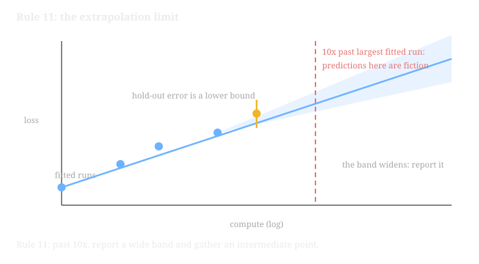
How to read this diagram
- \n
- Dots and line. Blue dots are the small runs you actually trained. The blue line is the power-law fit, L(C) = a*C^-b + c, extended rightward.
- The band. The shaded region widens with distance from the fitted points. Report the band, never a point prediction.
- The hold-out. The gold point with its error bar is a run the fit never saw. Its error is a lower bound on your real error.
- The red line. Ten times past your largest fitted run. Predictions to the right of it are fiction; go gather an intermediate point. \n
Trap 8. Wrong FLOP accounting. Embedding params counted in N for 6ND, MoE total params used instead of active params, or attention FLOPs ignored at long context. Each one silently breaks compute matching. Spot it: recompute the budget yourself from the architecture, with non-embedding params. Prevention: rows 24 and 25 of the numbers table.
The gallery below shows the six curve shapes from Track Chapter 8. Learn to name each one on sight.
loss
^ HEALTHY: smooth descent, flattening SPIKE: sudden jump, recovers
| * *
| * *
| ** * *
| *** * *
| ****** ******
+---------------> steps +---------------> steps
loss
^ SLOW DIVERGENCE: climbs away from min NaN DEATH: flatlines to invalid
| **** ****
| * *
| * *
| * *
| ** * * * (NaN)
| ** *
+---------------> steps +---------------> steps
loss
^ PLATEAU: flat, grad norm healthy OSCILLATION: regular sawtooth
| ******************* * * * * * *
| * * * * *
| * * * *
+---------------> steps +---------------> steps
How to read this diagram
- Top left, healthy. Loss falls fast, then flattens toward a floor. This is the only shape that needs no action.
- Top right, spike. A vertical jump that recovers. Apply Rule 6: check the gradient norm at the jump. Flat norm means a bad batch. Climbing norm means instability.
- Middle left, slow divergence. The curve climbs away from its minimum. Each step looks fine; only the trend gives it away. Compare the late median against the best-so-far median, not against the start.
- Middle right, NaN death. The trace goes invalid at one step and never comes back. Resume from the last good checkpoint, then fix the cause (precision, LR, bad batch) before relaunching.
- Bottom left, plateau. Flat loss with a healthy gradient norm. The optimizer is fine; the recipe is exhausted. Check the LR schedule position and data repeats.
- Bottom right, oscillation. Regular sawtooth with a fixed period. Real instability is not periodic. A fixed period points at the data loader (a poisoned shard, an interleaved eval), not the optimizer.
The detectors below turn the gallery into code. They use rolling statistics only, so they run online during a real run. The outputs shown are from the actual run captured while writing this pack.
import numpy as np
def detect_spike(loss, k=3.0, window=200):
# WHAT: flags steps where loss exceeds k x the rolling median.
# WHY: spikes are the earliest visible sign of instability. Catching one
# at step 41,000 instead of 60,000 saves real money.
# WHAT BREAKS: tuned for smooth LLM curves. Small noisy runs need wider
# windows and larger k, or the detector cries wolf.
loss = np.asarray(loss, dtype=float)
hits = []
for i in range(window, len(loss)):
med = np.median(loss[i-window:i])
if loss[i] > k * med:
hits.append(i)
return hits
def detect_diverged(loss, window=500, frac=0.10):
# WHAT: True if the last `frac` of steps sits far above the curve minimum.
# WHY: slow divergence looks healthy step-to-step; only the trend away
# from the best-so-far value gives it away.
loss = np.asarray(loss, dtype=float)
finite = loss[np.isfinite(loss)]
if len(finite) < window:
return False
meds = [np.median(finite[i:i+window]) for i in range(0, len(finite)-window, window)]
late = np.median(finite[-int(len(finite)*frac):])
return bool(late > 1.5 * min(meds))
def detect_nan(loss):
# WHAT: first step index where loss is NaN or infinite.
# WHY: the kill decision needs the exact step to roll back to.
bad = np.nonzero(~np.isfinite(loss))[0]
return int(bad[0]) if len(bad) else None
# --- Signature gallery: synthetic curves for four pathologies ---------------
def healthy(n=6000, seed=1):
rng = np.random.default_rng(seed)
t = np.arange(n)
return 8.0 / (1 + t/800.0)**0.35 + 1.8 + rng.normal(0, 0.02, n)
def loss_spike(n=6000, seed=2):
rng = np.random.default_rng(seed)
t = np.arange(n)
l = 8.0 / (1 + t/800.0)**0.35 + 1.8 + rng.normal(0, 0.02, n)
l[4100:4112] *= 6.0 # one bad batch blows up
l[4112:] = l[4112:] * 0.5 + 1.9 # recovery, then settles high
return l
def slow_divergence(n=6000, seed=3):
rng = np.random.default_rng(seed)
t = np.arange(n)
base = 8.0 / (1 + t/800.0)**0.35 + 1.8 + rng.normal(0, 0.02, n)
return base + 0.00035 * np.maximum(0, t - 2500)**1.3 # creeping climb
def nan_death(n=6000, seed=4):
rng = np.random.default_rng(seed)
t = np.arange(n)
l = 8.0 / (1 + t/800.0)**0.35 + 1.8 + rng.normal(0, 0.02, n)
l[5300:] = np.nan # overflow kills the run
return l
for name, gen in [("healthy", healthy), ("loss_spike", loss_spike),
("slow_divergence", slow_divergence), ("nan_death", nan_death)]:
l = gen()
spikes = detect_spike(l)
print("%-16s nan_at=%s diverged=%s spike_steps=%s" % (
name, detect_nan(l), detect_diverged(l),
(spikes[:3] + ["..."] if len(spikes) > 3 else spikes) or "none"))
healthy nan_at=None diverged=False spike_steps=none
loss_spike nan_at=None diverged=False spike_steps=[4100, 4101, 4102, ...]
slow_divergence nan_at=None diverged=True spike_steps=none
nan_death nan_at=5300 diverged=False spike_steps=none
How to read this diagram
- The detectors. Each one reads only past data (rolling medians), so it can run inside the training loop and page you mid-run.
- The gallery. Four synthetic curves stand in for the real pathologies. The healthy curve trips no detector. The spike is caught at step 4100, the exact injected step. The slow divergence is caught by the trend test. The NaN death reports step 5300, the rollback point.
- The point. Recognition speed is the skill. Adapt these detectors into your own run monitor before your next launch.
One more planning discipline from Track Chapter 5: the ablation matrix. One factor per axis, one run per cell. Read it two ways.
Factor under test: data mix (3 levels) x LR schedule (2 levels)
cosine decay WSD (warmup-stable-decay) schedule
old mix run A (control) run B
new mix run C run D
new mix + filter run E run F
Read down each column: the data-mix effect, holding schedule fixed.
Read across each row: the schedule effect, holding mix fixed.
The interaction (does the new mix need the new schedule?)
shows up only if you run the full matrix.
The full matrix is expensive. The discipline is deciding which cells to drop and writing down why, before the runs start. Dropping the interaction cells is a bet that the effects add. State the bet.
Next: Part 4 drills everything above with 30 rapid-fire questions.
Part 4. Rapid-fire Q&A
Rules, numbers, and traps only help if you can recall them under pressure. Part 4 is the drill: questions across ablations, paper reading, debugging runs, post-training judgment, and the capstone.
Answer each from memory before revealing. The answers are worked, not hinted: they show the math, the decision, and the trap.
Ablation design
Q1. Run A is 7B params on 140B tokens. Run B is 13B params on 75B tokens. Is the comparison compute-matched? Show the check.
Answer: yes, matched. Compute 6ND for each. A: 6 x 7e9 x 140e9 = 5.88e21 FLOPs. B: 6 x 13e9 x 75e9 = 5.85e21 FLOPs. The budgets agree within 1 percent, so the score delta is attributable to the recipe, not the compute. The discipline from Rule 1: report N, D, and FLOPs for both runs, always. A comparison that reports only the delta is incomplete.
Q2. Your treatment changes the tokenizer. What breaks in a compute-matched ablation, and how do you fix it?
Answer: the token count stops meaning the same thing. 6ND is matched in tokens, but the two tokenizers cut text into different units. So "140B tokens" is more text under one tokenizer than the other. The comparison is confounded by data quantity. Fix it by matching on characters or bytes instead of tokens, and report both counts. The deeper lesson: compute matching assumes the unit of D is comparable. A tokenizer change breaks that assumption.
Q3. Why a paired bootstrap instead of a t-test on the two raw score lists?
Answer: pairing removes item difficulty, which is most of the variance. A t-test on raw lists treats "this item was easy" as signal and assumes bell-shaped scores. The paired design takes per-item differences first (same items, both runs), then bootstraps those differences with no distributional assumptions. With 200 items, the paired CI is far tighter and more honest. That is why the +0.15 delta in Part 2 reads as noise: the raw means differ, but the paired interval contains zero.
Q4. Your eval shares passages across items (multi-hop QA over the same documents). What changes in the significance test?
Answer: resample passages, not items (cluster bootstrap). Items sharing a passage are not independent: one hard passage drags all its items down together. A plain bootstrap treats them as independent and makes the interval artificially narrow, so noise looks like signal. The fix costs nothing: group scores by passage, resample the groups, recompute the mean difference each time.
Q5. Name three situations where an ablation is NOT worth running.
Answer. First, the idea's failure mode is already settled by published ablations; rerunning it buys nothing. Second, the eval cannot detect the claimed effect (the CI from Part 2 would swallow it); fix the measurement before spending compute. Third, the compute is better spent on the scaling-law fit that gates the big run: one good extrapolation beats five inconclusive ablations. The common thread: an ablation must be able to change a decision. If it cannot, it is curiosity spending.
Q6. In the ablation matrix (data mix x LR schedule), what does the interaction cell tell you, and what bet are you making if you skip it?
Answer: the interaction cell tells you whether the new mix needs the new schedule. Reading down a column gives the mix effect at fixed schedule. Reading across a row gives the schedule effect at fixed mix. The interaction (run F minus the sum of the parts) shows up only in the full matrix. Skipping it is a bet that the effects add. State the bet in writing before the runs start, so a surprise later is a finding, not an excuse.
isoFLOP decision flow (one compute budget, many model sizes)
1. Pick 3-4 compute budgets, 10x apart (1e20, 4e20, 1.6e21 FLOPs)
2. At each budget, train 4-5 sizes across the N:D ratio range
3. Plot loss vs tokens-per-param; read the MINIMUM of each U-curve
4. The minima trace the efficient frontier: that is your N:D rule
5. Extrapolate the frontier to the big budget, then train once
worked check: 7B x 140B tokens = 6 x 7e9 x 140e9 = 5.88e21 FLOPs
13B x 75B tokens = 6 x 13e9 x 75e9 = 5.85e21 FLOPs
budgets agree within 1 percent: the comparison is compute-matched
Scaling laws
Q7. Derive 6ND on the board, in two lines.
Answer. Forward pass: each parameter participates in roughly one multiply-add per token, which is 2 FLOPs, so 2ND. Backward pass: gradients flow to both the activations and the weights, costing about twice the forward pass, so 4ND. Total: 6ND. The two caveats: N is non-embedding params, and for MoE it is active params, not total.
Q8. A lab proposes a 1T-param model on 2T tokens. Chinchilla-optimal or not? What do you tell them?
Answer: not optimal; it is undertrained. The ratio is 2 tokens per param against the Chinchilla optimum of ~20. At fixed compute, the scaling laws say shrink the model ~10x or grow the data ~10x (or meet in the middle). GPT-3 was the famous version of this mistake: 175B params on 300B tokens, about 1.7 tok/param, far below the optimum the field later found.
Q9. You fitted L(C) = a*C^-b + c on runs at 1e20, 4e20, and 1.6e21 FLOPs. The team wants a prediction at 1e23. What do you say?
Answer: no point prediction. 1e23 is ~60x past the largest fitted run, far beyond the 10x extrapolation limit of Rule 11. Report a wide band. Show the hold-out error as a lower bound on the true error. Propose one intermediate run (say 1.6e22) to anchor the fit before committing the big budget. Power laws are honest interpolators and fiction at that range.
Q10. What is an isoFLOP profile, and what does its U-shape mean?
Answer: fix the FLOPs, vary the model size, plot loss. The curve is U-shaped. Tiny models waste the budget on too few params; huge models waste it on too few tokens per param. The minimum is the optimal size for that budget. Repeat at several budgets (spaced ~4x apart) and join the minima. That line is the scaling trend, and its slope tells you how to split the next budget between size and data.
Q11. Why did Chinchilla (70B) beat Gopher (280B) at matched compute? Give the numbers.
Answer: Gopher spent the budget on params, Chinchilla spent it on the optimal tradeoff. Gopher: 6 x 280e9 x 300e9 = 5.04e23 FLOPs at ~1 token/param. Chinchilla: 6 x 70e9 x 1.4e12 = 5.88e23 FLOPs at 20 tokens/param. Roughly matched compute, but Chinchilla sat at the bottom of the U-curve while Gopher sat on its wall. The lesson: at fixed compute, the split between N and D matters more than N alone.
Q12. Kaplan (2020) vs Chinchilla (2022) in one sentence each.
Answer. Kaplan: at fixed compute, spend it on parameters; the models of 2020 were undertrained. Chinchilla: at fixed compute, scale parameters and tokens in equal proportion (~20 tok/param); Kaplan's models were undertrained in data, not params. The correction changed every lab's training recipe within a year.
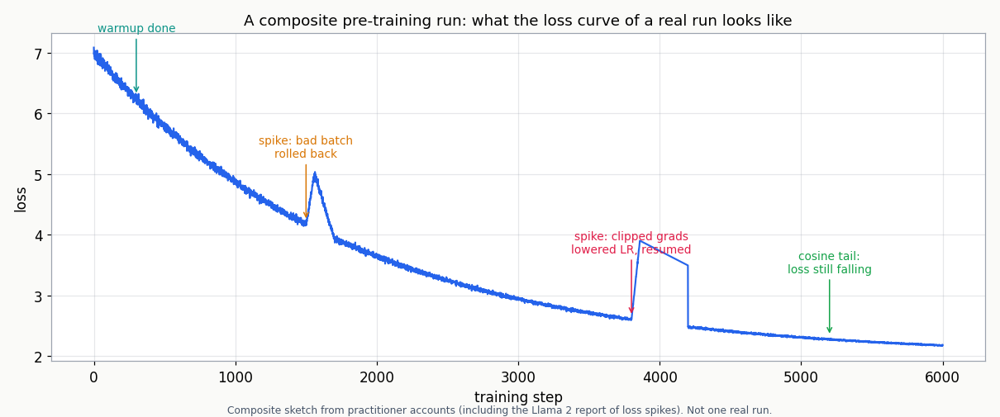
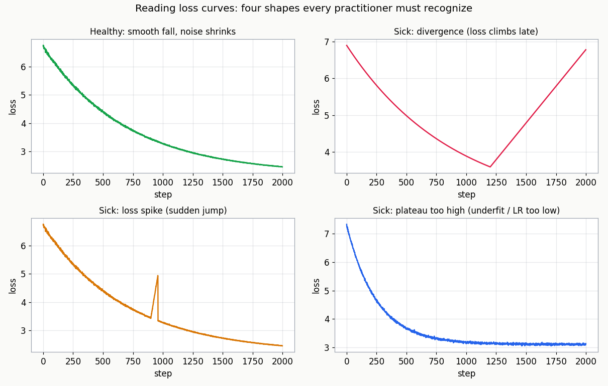
Debugging runs
Q13. Loss spikes 6x at step 41,000, recovers within 50 steps, and settles slightly higher. Data or optimizer? What do you check first?
Answer: check the gradient norm at the spike first. Flat norm means a data artifact: one bad batch blew up the loss without disturbing the optimizer. Pull that batch and inspect it (corrupted sequence, wrong language, extreme length). Climbing norm means instability: the optimizer took a bad step. If it recovered and settled only slightly higher, it was almost certainly data. Do not cut the LR over one bad batch.
Q14. Gradient norm climbs steadily for thousands of steps while loss plateaus. What does it mean, and what do you change?
Answer: the optimizer is fighting itself. The steps are getting larger while achieving less: the learning rate is too high for this phase, or mixed-precision loss scaling is misbehaving. Lower the LR slightly and resume from the last good checkpoint. Check the loss-scale trace too: frequent underflows plus a climbing norm point at precision, not the schedule.
Q15. NaN at step 53,000. Name your first three actions, in order.
Answer. One: roll back to the last good checkpoint, including the optimizer and loss-scaler state; never resume NaN weights. Two: find the cause class: check whether a spike preceded it (instability), whether the batch was unusual (data), and whether loss scaling overflowed (precision). Three: change one thing before relaunching: tighten gradient clipping (capping the gradient's norm so one bad batch cannot take a giant step), lower the LR slightly, or filter the offending data. Relaunching unchanged is how one NaN becomes three dead runs.
Q16. MFU is 22 percent on a new 512-GPU run. What do you change first?
Answer: nothing about the science; fix the systems first (Rule 5). Below 30 percent means something structural is wrong. Profile a single step before changing anything. The usual suspects: a batch too small (tiny kernels keep the SMs busy doing nothing), a parallelism layout that exposes communication, or a data loader starving the GPUs. No ablation result is trustworthy until MFU is back in the 40-60 percent band.
Q17. Loss is flat for 20 percent of steps and the gradient norm is healthy. What is it?
Answer: a plateau, not a failure. The optimizer is fine; the recipe is exhausted. Check three things. Where is the LR schedule? (Decayed too far too early?) Is the data repeating? (Single-epoch pre-training should not repeat.) Is the eval itself saturated? The fix is a recipe change (schedule, data mix), never a bigger batch.
Q18. Your spike detector fires every 500 steps like clockwork. Bug in the detector or signal in the run?
Answer: signal in the run; the detector is doing its job. Real instability is not periodic. A fixed period points at the data pipeline: a poisoned shard that comes around every epoch fraction, or an eval interleaved on a fixed cadence. Inspect the batches at those exact steps. The period (500) is the clue: find what else in the system has period 500.
Paper reading
Q19. The 90-minute first pass: what are the three questions you answer before reading past page 4?
Answer. One: what is the claim, stated as a falsifiable sentence? Two: what is the evidence, meaning compute, ablations, and seeds, not adjectives? Three: what would change in my work if the claim were true? If you cannot answer the first, the paper has no claim to evaluate. If the third answer is "nothing," stop reading and move on.
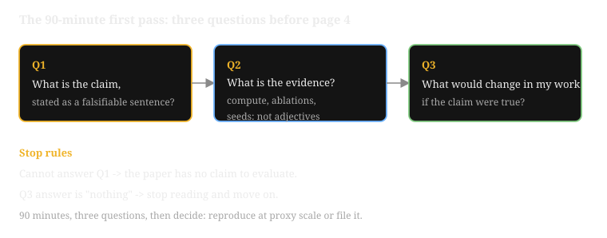
Q20. A paper reports +3 points on one benchmark, one seed, no code, no ablations. What is your triage verdict?
Answer: high risk; reproduce at proxy scale before adopting (Rule 7). The missing ablations hurt most: without them you cannot tell whether the idea or the tuning did the work. Single seed plus no code means you cannot even check the baseline's compute. Score it accordingly, file the reproduction as a small project, and do not let it change any recipe until the proxy run confirms the direction.
Q21. The paper's baseline is described as "the original model." What do you check before believing the delta?
Answer: whether the baseline got the same budget and tuning as the method. Reconstruct 6ND for both. Check the data: was the baseline trained on the same mix? Check the tuning: did the baseline get the same LR sweep? A method that beats an undertrained or stale baseline (Trap 6, the strawman) proves nothing. The honest comparison is new method vs best-known baseline at matched compute.
Q22. What do the loss curves in a paper's appendix tell you that its tables cannot?
Answer: stability. Spikes, restarts, NaN recoveries, and cherry-picked "stable" windows are visible in curves and invisible in final numbers. A table reports the endpoint; the curve reports the journey. If the appendix curves are missing or suspiciously smooth while the method is supposedly sensitive, that is a finding, not an absence.
Q23. Lay out the three-day reproduction plan.
Answer. Day 1: restate the claims as falsifiable statements (C1, C2, C3 style), get the data and code running at tiny scale, and confirm the pipeline produces numbers. Day 2: reproduce the core claim at proxy scale; one clean experiment that would confirm the central result. Day 3: run the ablation that would kill the claim if it were wrong, then write up the verdict honestly, including the negative result if that is what you found.
Post-training judgment
Q24. In DPO, what does beta control, and what single trace do you watch during training?
Answer: beta sets how strongly the policy must stay near the reference model. High beta means "stay close to the SFT model". Low beta lets the policy chase the preference signal harder. Watch the mean token-level KL between policy and reference on a fixed prompt set, each epoch. Small and stable is healthy. KL exploding means the policy is drifting: stop or strengthen the penalty.
Q25. Reward climbs every epoch. KL from the SFT reference climbs faster. Diagnosis and fix?
Answer: reward hacking (Trap 3). The policy found a loophole in the proxy: outputs that score high without being better. The KL explosion is the giveaway; a genuinely better policy would not need to run that far from the reference. Fix: strengthen the KL penalty, inspect high-reward samples by hand to find the exploit, and improve the reward signal (better labels, or verifiable rewards where the task allows).
Q26. State PPO's clipped objective in words. What does the min() do?
Answer: for each token, take the pessimistic of the unclipped and clipped ratio-times-advantage. The ratio is new-policy over old-policy probability. The min() caps the upside: one lucky sample cannot push a token's probability up without bound (clipped at 1 + eps). It also stops pushing down a bad token once the policy has moved past 1 - eps. Net effect: updates stay in a trust region around the old policy, and eps = 0.2 is the standard width.
Q27. What does GRPO drop from PPO, and what replaces it?
Answer: it drops the learned value model (the critic). Instead of a critic's baseline, GRPO samples a group of completions per prompt and sets advantage = (reward - group mean) / group std. The group's own statistics become the baseline. This is cheaper (no second model to train) and works well when rewards are verifiable per completion, as in math and code tasks.
Capstone
Q28. State the Chinchilla claim C3 as a falsifiable sentence, with the numbers.
Answer: a compute-matched smaller model trained on more tokens beats a larger model trained on fewer tokens. Chinchilla: 70B params, 1.4T tokens, 5.88e23 FLOPs, 20 tok/param. Gopher-class: 280B params, 300B tokens, 5.04e23 FLOPs, ~1 tok/param. It is falsifiable: train both at matched FLOPs and compare. If the bigger model wins, C3 is wrong.
Q29. Your isoFLOP sweep uses 3 budgets (1e20, 4e20, 1.6e21 FLOPs) x 4 sizes on H100s at MFU 0.45. What is the total cost?
Answer: 12 runs, 8.4e21 FLOPs total, 5,243 GPU-hours, padded to 7,340. The math: GPU-hours = total FLOPs / (peak x MFU) / 3600, with peak 989 TFLOPS. The 40 percent padding is for MFU risk: small proxy runs often hit lower MFU than large ones. Price the sweep before launching it; that is the whole point of the capstone budget code.
Q30. Your reproduction finds the isoFLOP minimum at 8 tokens per param, not 20. Did the reproduction fail?
Answer: no; the shape reproduced, the constant moved. C2 is the heart of the paper: a clear minimum that moves with budget. A U-curve with a minimum at 8 tok/param confirms it. The exact constant (20) depends on data, architecture, and tokenizer. The paper's claim is about the tradeoff's shape and direction, not a universal magic number. The honest write-up says exactly that: shape reproduced, constant is setup-dependent.
Next: Part 5 compresses the capstone, the Chinchilla reproduction at proxy scale, to one page.
Part 5. The capstone in one page
This is the pack in action. Everything above, the rules, the formulas, the traps, gets used in one project: a compute-matched reproduction with a priced budget.
The capstone reproduces Chinchilla (Hoffmann et al., 2022) at proxy scale. The paper is the ideal target for three reasons. Its claim changed every lab's recipe. Its method (isoFLOP profiles) is reusable on any future question. And the claim is about the shape of a tradeoff, which shows up long before frontier scale.
The three claims, as falsifiable statements. C1: for a fixed compute budget, loss is minimized by scaling params and tokens in roughly equal proportion (~20 tok/param). C2: an isoFLOP profile shows a clear loss minimum at the optimal size, fittable as a parabola in log space. C3: a compute-matched smaller model on more tokens beats a larger model on fewer tokens (70B/1.4T vs 280B-class).
The four phases, in order:
- Phase 0: restate the claims (done above). Each claim gets its own experiment.
- Phase 1: fix the data. Dedupe (MinHash, the fuzzy near-duplicate detector, or exact-substring), decontaminate (remove eval overlap), and freeze one data mix for the whole sweep; the mix is a confounder, not the variable.
- Phase 2: run the sweep, 3 budgets x 4-6 sizes.
- Phase 3: fit and predict. Fit a parabola per budget in log space, read the minima, join them into the optima line.
- Phase 4: price it before launching, with the code below.
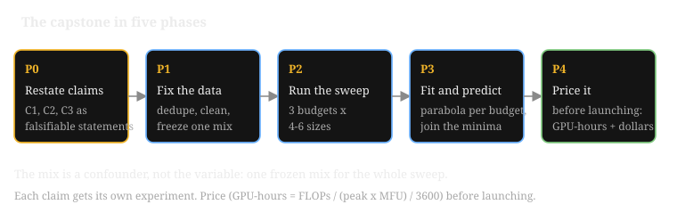
The sketch shows what Phase 3 should produce: one U-curve per budget, minima marching right as the budget grows.
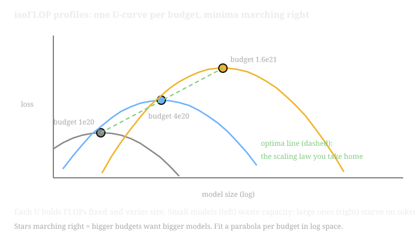
How to read this diagram
- \n
- Axes. Horizontal is model size on a log scale, vertical is loss. Each curve holds FLOPs fixed.
- The U-shape. Small models (left) waste capacity; large ones (right) starve on tokens. The bottom of each U is the optimal size for that budget.
- The stars. Fitted minima, one per budget. They march right as the budget grows: 1e20, 4e20, 1.6e21.
- The dashed line. The optima line through the stars. Its slope is the scaling law you take home. \n
loss
^ budget 3 (1.6e21)
| .-.
| - -
| - -
| - - budget 2 (4e20)
| - - .-.
| - - - -
| - - - -
| - - - - budget 1 (1e20)
| - - - - .-.
| - -- - - -
|- - -
+----------------------------------------------------> model size (log)
* * *
optimum 1 optimum 2 optimum 3
Each U is one budget, fixed FLOPs, varying size.
The star is the fitted minimum of that budget.
Stars marching right = bigger budgets want bigger models.
The slope of the star-line is the scaling law you take home.
How to read this diagram
- Axes. Horizontal is model size on a log scale, vertical is loss. Each curve holds FLOPs fixed.
- The U-shape. Small models (left) waste the budget on too few params; large models (right) waste it on too few tokens per param. The bottom is the optimal split.
- The stars. One fitted minimum per budget, from a parabola fit in log space (C2).
- The march. Optima move right as the budget grows. The line through the stars is the deliverable: it tells you the optimal size for any budget on this data.
Price the sweep with the code below. Outputs are from the real run captured while writing this pack.
# Capstone budget math: price the isoFLOP sweep before launching it.
# WHAT: from budgets and model sizes, compute tokens per run, total
# FLOPs, and GPU-hours given hardware peak and MFU.
# WHY: the sweep is 12 runs here. Without this math you either
# under-budget (runs die half trained) or over-budget (money burns).
# WHAT BREAKS IF CHANGED: 6ND is dense-transformer accounting (use active
# params for MoE). MFU is the biggest uncertainty: pad the GPU-hour
# estimate by 30-50 percent, since small proxy runs often hit lower MFU.
def plan_sweep(budgets_flops, sizes, gpu_peak_tflops, mfu):
# Returns per-budget rows plus totals: runs, FLOPs, GPU-hours.
plan = []
total_flops = 0.0
n_runs = 0
for budget in budgets_flops:
rows = []
for n in sizes:
d = budget / (6.0 * n) # tokens that spend exactly the budget
rows.append((n, d))
total_flops += budget
n_runs += 1
plan.append({"budget": budget, "rows": rows})
# GPU-hours = total FLOPs / (peak * MFU), converted to hours.
gpu_hours = total_flops / (gpu_peak_tflops * 1e12 * mfu) / 3600.0
return plan, n_runs, total_flops, gpu_hours
# Example: 3 budgets (spaced ~4x) x 4 sizes (spanning 8x params),
# on H100 (989 TFLOPS BF16 dense), MFU 0.45.
plan, n_runs, total_flops, gpu_hours = plan_sweep(
[1e20, 4e20, 1.6e21], [250e6, 500e6, 1e9, 2e9],
gpu_peak_tflops=989.0, mfu=0.45)
print("runs: %d total FLOPs: %.3e GPU-hours: %s" % (n_runs, total_flops, format(gpu_hours, ",.0f")))
print("padded (+40%% for MFU risk): %s GPU-hours" % format(gpu_hours * 1.4, ",.0f"))
print()
for p in plan:
print("budget %.1e FLOPs:" % p["budget"])
for n, d in p["rows"]:
print(" N=%5s D=%7.1fB tokens ratio=%6.1f tok/param" %
("%.0fM" % (n/1e6) if n < 1e9 else "%.0fB" % (n/1e9), d/1e9, d/n))
runs: 12 total FLOPs: 8.400e+21 GPU-hours: 5,243
padded (+40% for MFU risk): 7,340 GPU-hours
budget 1.0e+20 FLOPs:
N= 250M D= 66.7B tokens ratio= 266.7 tok/param
N= 500M D= 33.3B tokens ratio= 66.7 tok/param
N= 1B D= 16.7B tokens ratio= 16.7 tok/param
N= 2B D= 8.3B tokens ratio= 4.2 tok/param
budget 4.0e+20 FLOPs:
N= 250M D= 266.7B tokens ratio=1066.7 tok/param
N= 500M D= 133.3B tokens ratio= 266.7 tok/param
N= 1B D= 66.7B tokens ratio= 66.7 tok/param
N= 2B D= 33.3B tokens ratio= 16.7 tok/param
budget 1.6e+21 FLOPs:
N= 250M D= 1066.7B tokens ratio=4266.7 tok/param
N= 500M D= 533.3B tokens ratio=1066.7 tok/param
N= 1B D= 266.7B tokens ratio= 266.7 tok/param
N= 2B D= 133.3B tokens ratio= 66.7 tok/param
How to read this diagram
- The call. Three budgets, four sizes, H100 peak, MFU 0.45. The function returns everything needed to book the cluster.
- The totals. 12 runs, 8.4e21 FLOPs, 5,243 GPU-hours, padded to 7,340 for MFU risk. This number goes into the project plan before a single run launches.
- The rows. Each row is one run: size, tokens, and the tokens-per-param ratio. At the smallest budget the 1B model sits at 16.7 tok/param, nearest the Chinchilla line; the 2B model at 4.2 is visibly off-optimal. That is the U-curve taking shape in the plan itself.
- The failure modes. If a budget's U-curve has no clear minimum, the size grid was too narrow: widen it. If minima do not march with budget, check the data mix for drift between runs. If the optimum lands far from 20 tok/param, see Q30: the shape is the claim, the constant is setup-dependent.
What "reproduced" means. Not matching the paper's constant. Reproducing Chinchilla means three things. Your isoFLOP profiles show clear minima (C2). The minima move with budget along a clean trend (C1). A compute-matched small-on-more-tokens run beats big-on-fewer-tokens (C3). Write that verdict down, with the numbers, even when it is negative.
Next: Part 6, the one-page cheat sheet with the 30 numbers and rules that matter most.
Part 6. One-page cheat sheet
The whole pack at a glance. If Part 5 is the pack in action, Part 6 is the pack beside the keyboard: the numbers you need, and nothing you do not.
The 30 that matter most. Print this page.
- Training FLOPs: C = 6ND (2 fwd + 4 bwd per param per token).
- N means non-embedding params; MoE means active params.
- Chinchilla-optimal: ~20 tokens per param at fixed compute.
- Inference-optimal: overtrain small models when serving dominates cost.
- GPT-3: 3.15e23 FLOPs. Chinchilla: 5.88e23. Gopher: 5.04e23.
- Kaplan: loss ~ C^-0.050. Power law: L(C) = a*C^-b + c.
- MFU 40-60 percent is healthy; below 30 percent, fix systems first.
- H100 BF16 dense peak: 989 TFLOPS. GPU-hours = FLOPs / (peak x MFU) / 3600.
- AdamW states: 8 bytes/param. Weights in bf16: 2 bytes/param.
- Batch at scale: millions of tokens (LLaMA: 4M). Batch controls noise, LR controls step size.
- Warmup: hundreds to low thousands of steps. Cosine decay to ~10 percent of peak.
- Gradient clip: 1.0 global norm.
- Dead runs show in the first 5 percent of steps. Kill fast.
- Spike = 3x rolling median. Read it with the gradient norm: flat = data, climbing = optimizer.
- NaN: roll back to the last good checkpoint with optimizer state; change one thing.
- Plateau with healthy grad norm = exhausted recipe, not broken optimizer.
- Periodic spikes = data pipeline, not instability. Find what shares the period.
- Ablate "does it help" at matched 6ND. Fit scaling laws for "how much."
- Report N, D, and FLOPs for every run in a comparison. Always.
- Tokenizer changes break token matching. Match on characters or bytes.
- Paired bootstrap: same items, per-item diffs, 2,000+ resamples, 95 percent CI.
- Zero inside the CI = noise. Shared passages = cluster bootstrap.
- isoFLOP grid: budgets ~4x apart, 4-6 sizes over ~8x params, 12-18 runs.
- Extrapolation past 10x = fiction. Report a band and gather an intermediate point.
- Ablation matrix: one factor per axis. Skipping interactions is a bet; state it.
- Contamination check before celebrating any data-driven jump.
- PPO: min() of unclipped and clipped ratio x advantage; eps = 0.2.
- DPO: beta holds the policy near reference; watch token-level KL per epoch.
- GRPO: advantage = (reward - group mean) / group std. No critic.
- Honest negative results get written up. The lab's memory is the product.
Last verified: September 2026. The scaling numbers come from Hoffmann et al., 2022 and Kaplan et al., 2020. That means 6ND, Chinchilla 70B/1.4T vs Gopher 280B, GPT-3 3.15e23, ~20 tok/param, and the Kaplan exponents. They are covered in Volumes 5 and 12. MFU bands, AdamW memory, LLaMA 4M-token batches, warmup/cosine/clip recipe, and SFT practice are from Volumes 5-7. Ablation, bootstrap, isoFLOP, and capstone methods are from Track 1, Chapters 5-9. UNVERIFIED: exact recipe defaults that vary by lab (DPO beta ~0.1, RoPE base values) are standard-practice values, not volume-grounded. Re-check them against the cited volume before quoting them in a design doc.
Where to go next
The next pack in the sequence is Crash: Post-training / Alignment. This pack covered the pre-training half of the job: scaling laws, budgets, and run health. The next one answers the question this pack leaves open: once the pre-trained model exists, how do you shape it into something useful and safe to ship? DPO vs PPO vs GRPO, reward models, KL budgets, and eval gates.
Watch and go deeper
Why scaling works, twice over: the big picture in nats (natural-log units of information), then the Chinchilla paper derived experiment by experiment. Plus the papers and the training recipe.
Go deeper
- Scaling Laws for Neural Language Models Kaplan et al.: loss as a power law in compute, model size, and data. The paper Part 1 rules are built on.
- A Recipe for Training Neural Networks Karpathy's field guide to training neural nets: the debugging discipline behind Rules 4 and 5.
- Training Compute-Optimal Large Language Models (Chinchilla) The 70B-beats-280B result that sets the 20-tokens-per-param default.